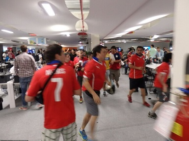

Part of the stadium is difficult to get a ticket in Rio, and it is difficult to get into the stadium
Source: Beijing Times (Beijing)
After the start of the World Cup, there were a large number of empty seats in many venues. At one time, there was news that FIFA was worried about attendance, but the attendance rate of Rio was always hot. Yesterday, hundreds of Chilean fans rushed into the stadium from the media center. Ticket stealing also occurred in Maracana. FIFA revealed that fans without tickets have become a major problem.
 Marks
Should I bring two wallets
After I came to Rio, I was quite satisfied with the security here. I didn't see the legendary snitches and robbers, nor were I threatened by large-scale demonstrations. But the locals always remind me that I cannot relax my guard, because this is not the true side of Rio.
"The place where you lived before was a big slum 300 meters away, and people often came out to rob at night." Xiao Chen, who works in Brazil, told me that the street where I walked alone every night was actually not very flat. No robbery was encountered. In addition to good luck, it was also related to the work of the Brazilian police during the World Cup. Rio sent more than 20,000 police officers to patrol various neighborhoods. In addition, the police also greeted the underworld that controls the slums, allowing them to have reservations during the World Cup. This also reflects the local characteristics. Even if it is a robbery, it also pays attention to Brazil's international influence. It will naturally be a little leisurely when it is time to stop.
Just near the hotel where we live, there was a big riot last month and many shops were smashed. But now everything is calming down. The government has temporarily satisfied workers’ demands for wage increases, and protests have been significantly reduced compared to last year’s Confederations Cup. Walking near the beach, watching many people relaxing in the sand basking in the sun, it’s hard to imagine a reminder from the local overseas Chinese when they first arrived in Rio: “Never go to the beach by yourself, let alone take a taxi at night. Be sure to shake the window tightly, don't stop, after 10 o'clock in the night, as long as you park, someone will grab something."
When I chatted with others about my impressions of Rio’s security, the locals immediately reminded me seriously not to let my guard down. Xiao Chen told me that Chinese people have two wallets here, and if they are robbed, they will immediately hand over the one with less money. He suggested that I do the same. But when I go out by myself, in order to reduce my burden, I always put money in my pocket. This has become one of my most talked about-"You need a wallet". Dare I want to prepare one specially for the robbers?
The difficulty of mixing into the stadium has increased
As a football mecca, Maracana is a mecca for fans. An Argentine fan told reporters that they could not buy tickets this time, but they came with hope and wanted to enter the stadium after the game started. The result failed.
Fans’ thinking is not a fantasy. In previous World Cups, there have been many examples of people without a ticket entering the stadium. In South Africa 4 years ago, once the game started half an hour, the iron gate of the stadium would open, and the police would go to drink and watch the game. Many fans took advantage of this gap to get into the arena. In some venues, there are locals who are familiar with the arena, who can bring you into the arena with just a few dozen dollars. South Africa’s tickets are far less tense than Rio’s. A Chinese journalist once received a free ticket, just because he wore a Brazilian team scarf and gave him the ticket to the brother of Brazil’s left-back Bastos. You are a Brazilian fan, please come in and cheer for my brother".
In Maracanã, it is a fantasy to expect someone to give yourself a ticket. The scalpers can hardly see it, and the people asking for votes are bustling. The ticket price of the first game was fired to more than 10 times, and it is still very lucky to get it. A Japanese football fan came to watch the game. When they first left the subway and asked the staff about the route with the ticket, they were led by the snatch.
Maracana's strict security has broken the dreams of many "pilgrimage" fans. FIFA hopes that the World Cup will attract more people's attention, but the presence of fans without tickets is obviously not part of it.
The Maracanã Stadium in Rio de Janeiro, the media center, will host 7 matches this time. In the first match between Argentina and Bosnia and Herzegovina, nearly 10,000 untied fans appeared. They tried various ways to enter the stadium, but most of them returned in anguish. Although the Argentine fans are passionate and unrestrained, they are not as powerful as the Chileans.
Yesterday afternoon, the media center continued to operate as usual. Suddenly, there was a loud drum noise from the door, and then many red fans poured in from the entrance and began to destroy the simple wall connecting the stadium. Two TVs fell to the ground, the simple wall was knocked down, and the fans began to rush towards the stadium from the gap. At this time, the security began to take action, reaching out to catch the Chilean fans, and even assaulted a few female fans. However, there were too many opponents, and some people escaped into the arena.
Subsequently, more and more security guards in orange clothes entered the stadium to hunt for the ticket-evading fans, and finally dragged hundreds of people back to the media center and forcibly sent them out of the stadium. Numerous media in the workplace rushed to send pictures and newsletters to deliver this shocking news.
According to media director Sethley, the fans who hit the media center had no tickets and wanted to watch the game too much, so they took the risk. Maracanã fans are guarded by big iron gates at the entrance, and they can only be issued once with one swipe. There are also police officers with guns, which are extremely difficult to break through the defense. The "smart" Chilean fans chose the 9th gate of the media center, where the security is relatively weak and there is no iron gate to block them, and the result is a hit.
FIFA announced this week that at least 20 or 30 fans tried to enter the stadium with fake tickets in the first game in Rio. Many more fans tried to cross the fence and were blocked. “Fans without tickets have become the current one. Outstanding issue".
The distribution of tickets is extremely uneven.
The reporter learned from FIFA that 2.9 million tickets have been sold for this game, almost sold out. However, most of the seats in the games in remote cities are still empty, and only Rio is hard to find. FIFA’s distribution policy has more or less caused the phenomenon that some matches are not available, and some matches are hard to find.
According to FIFA's standard for dividing votes, not everyone can buy tickets. Part of the World Cup tickets are publicly sold, and the rest are allocated by FIFA according to the conditions of the participating countries. For example, China has only 700 tickets that can be drawn online. If fans want to buy tickets, they can only pray for luck. Most of the tickets were distributed to host Brazil and other participating countries. Brazilian fans bought more than 1.3 million tickets, reflecting their enthusiasm for the World Cup. However, the purchasing power of other participating countries is very uneven, and transportation has become a core factor. Take the focus game between England and Italy on June 14 as an example. Only 200 Italian fans bought tickets through their national football association. Due to the long distance to Italy and the high cost of accommodation in Brazil, most Italian fans chose to watch the game at home. In the end, the Italian Football Association had thousands of tickets left.
In contrast, Argentina, Chile and Brazil are very close, and it is much more convenient for fans to come over, resulting in a shortage of tickets for games with South American teams. According to Brazilian customs, more than 80,000 Argentine fans came to Rio before Argentina and Bosnia and Herzegovina. According to FIFA's information, only 61,000 Argentines hold World Cup tickets, and a smaller proportion of them hold this game. Yesterday, more than 40,000 Chilean fans were also present, far exceeding the number of ticket holders. Many Chilean fans said that they could not buy tickets.